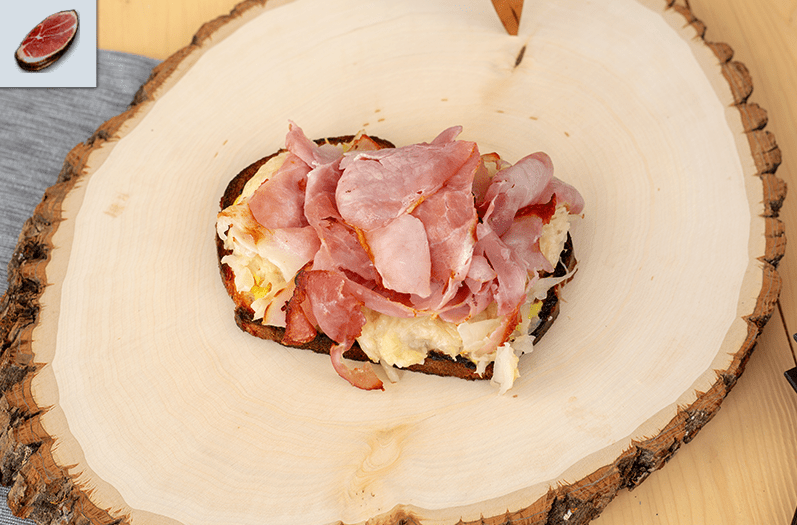

THE WITCHER 3: HAM SANDWICH

A delicious sandwich with an amazing history to tell
The sandwich it is an amazing experience for people who
whant to taste something from a videogame easy and simple
Return to top
Return
Ingredients
- ½ tbsp horseradish
- ½ tsp apple cider vinegar
- 1 tbsp mustard
- ½ tbsp mayo
- 1 ½ tbsp butter, room temperature
- 2 tsp garlic paste
- 2 slices of rye bread
- 2 slices of swiss cheese
- 4 slices of ham
- ½ cup sauerkraut
Steps
- Combine all the ingredients for the sauce
together in a bowl and place in the refrigerator
until you are ready to use it.
- Mix the butter and garlic paste together in a bowl.
Spread the garlic butter over each of the rye bread slices.
Place the buttered bread (butter side up) on a baking sheet.
- On the same sheet, add the pieces of ham and the sauerkraut (two ¼ cup sized portions).
Turn on a broiler and place the sheet under there until the bread begins to crisp.
Remove it and flip everything on the baking sheet.
- Add the a slice of swiss cheese on top of each of the sauerkraut portions. Return to the
broiler and cook until the other side of the bread crisps.
- To assemble the sandwich, take a piece of bread and have the buttered side facing up.
Smear a generous portion of the sauce on the bread. Top with the sauerkraut and cheese.
Finally, add ham and enjoy.